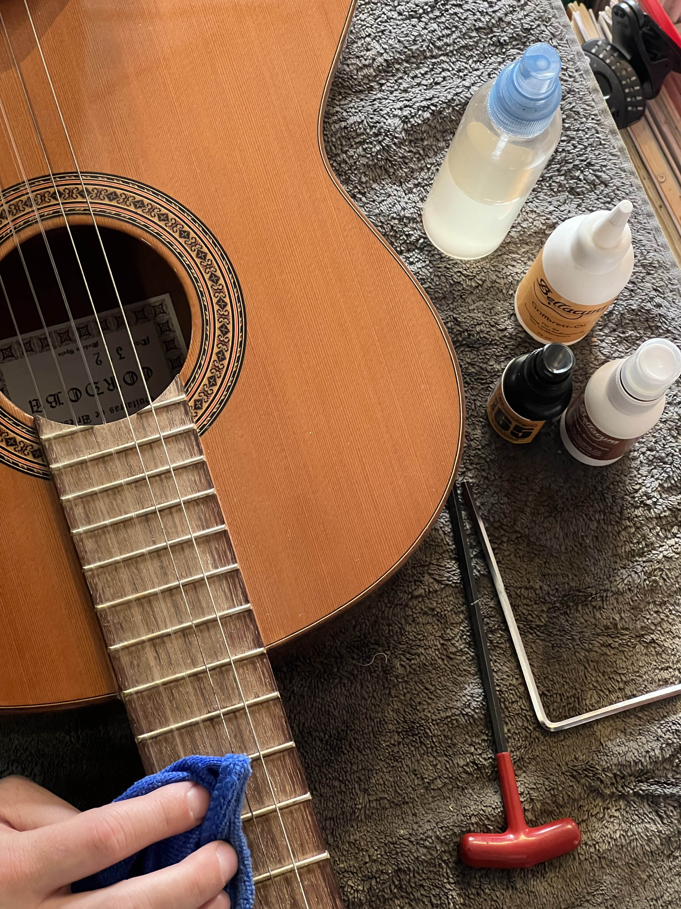

Atelier de lutherie
Rueil Musique vous propose son savoir-faire en lutherie. L'atelier restaure, répare et entretient vos "petites grands-mères" pour leur redonner leur âme d'antan.
- Changement de cordes : guitares, violons, ukuleles, basses électriques, mandolines, etc.
- Entretien : nettoyage, lustrage, soin de la touche, désoxydation, etc.
- Réglage complet : manche, action, intonation, bloc vibrato
- Réparation : recollage de la tête, chevalet, fissure corps & table d'harmonie, changement de mécaniques, etc.
- Électronique : embase, câblage, pose micro, etc.
- Retouche vernis
Bon à savoir : tous les instruments du magasin sont contrôlés et réglés par notre atelier de lutherie avant la vente. L'atelier intervient en priorité sur les instruments achetés à Rueil Musique, et le suivi est fait gracieusement sans limite de temps ! Seul le changement de cordes reste à votre charge.
Contactez-nous pour en savoir plus
🔧 L'importance et l'intérêt d'un réglage et d'un entretien
Que vous soyez simple débutant ou joueur professionnel, le réglage et l'entretien de son instrument est capital pour garantir la meilleure expérience de jeu possible. Et le réglage, ce n'est pas quelque chose d'universel, c'est en fonction des besoins de chacun. Chaque cas est différent, il est personnalisé en fonction de plusieurs facteurs :
- ✔️ Votre style de jeu : accords, picking, solo, etc.
- ✔️ Votre attaque à la main droite : fine, modérée, ou franche
- ✔️ Votre préférence au niveau des cordes : souplesse ou robustesse
- ✔️ Et autres : accordages en Drop, taille du diapason de l'instrument, etc.
Un bon réglage, c'est de la cohérence en fonction du projet personnel.
Le réglage n'est pas juste offrir un meilleur confort, c'est donner pleine vie à votre instrument pour maximiser le plaisir de jouer et garantir un bon apprentissage. Un instrument dont le réglage et l'entretien n'ont pas été faits sur mesure peuvent en l'occurence être la cause de :
- ❌ Une attaque difficile voire douloureuse sur les cordes
- ❌ Des cordes qui frisent (bruits parasites)
- ❌ Un instrument qui sonne faux malgré un bon accordage
- ❌ Potentiellement une mauvaise raison d'acheter un nouvel instrument
Tout comme un contrôle technique régulier de sa voiture, il est essentiel de vérifier au fil du temps l'état de son instrument pour le faire vivre le plus longtemps possible, et d'en tirer le meilleur parti. C'est pourquoi nous offrons à nos clients ayant acheté leurs instruments dans notre magasin le réglage et l'entretien gratuitement, et ce à vie.
Demandez conseil à notre luthier Fabien, il saura vous prescrire le réglage le plus optimal en fonction de vous et de vos préférences. Donnez une chance à votre instrument et offrez-vous l'expérience que vous méritez.
Contactez-nous